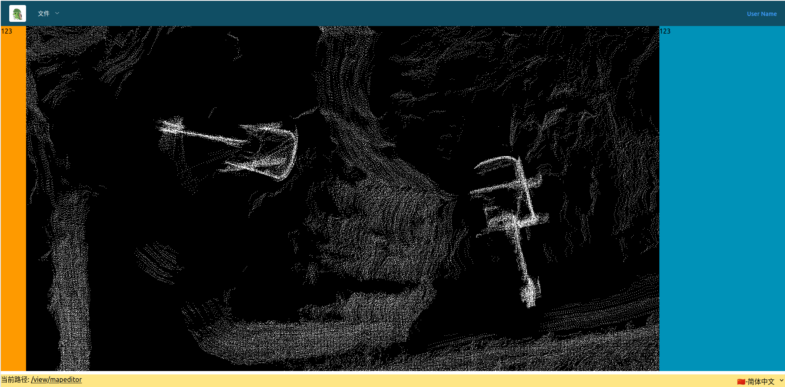
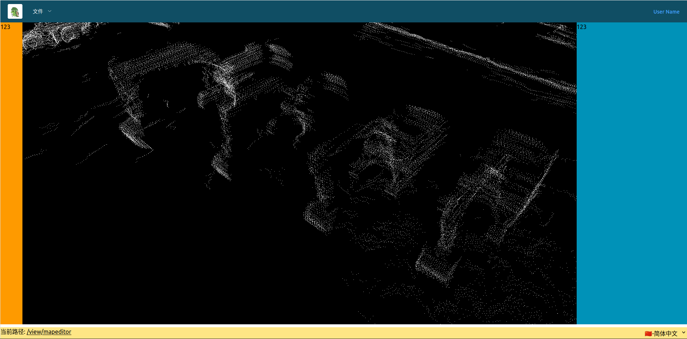
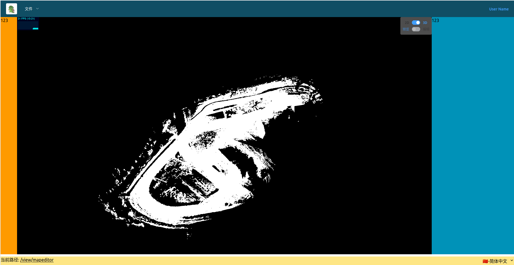

通过ThreeJS 加载并渲染PCD 点云图
看过Vector Map Builder 在线绘制lanlet2 地图，可以加载PCD 点云、并支持2D/3D 视角切换。感觉挺有意思的。仅以这篇笔记作为2025 最后的礼物。
ThreeJS 概念
- scense： 场景或舞台，所有THREE 元素的容器
- camera：相机，观察者的视角，本文用两种：
- OrthographicCamera： 正交相机，2D 视图用
- PerspectiveCamera：透视相机，3D 视图用
- renderer：渲染器，相机观察到的场景渲染到Canvas 上
- controls：控制器，响应鼠标拖拽、旋转、缩放事件。一般用OrbitControls
- animate()： 渲染的函数，会由浏览器定时调用
实现代码
ThreeJS 教程里面都是面向过程的调用，因为我需要把整个3D 封装成一个Vue 组件，因此需要将其封装成一个类，尽量少的对外暴露属性和方法。
MapCanvas Vue 组件
演示用的功能比较简单，功能全是写死的。需要注意的一点，我们不用id 来选择DOM 元素，而是通过Vue 中的ref 属性指代，唯一的缺点就是需要在onMounted 触发时才能生效。
<template>
<div ref="map_canvas" class=" h-full w-full bg-green-100 p-0 m-0"></div>
</template>
<script setup>
import { onMounted, ref, watch } from 'vue';
import {MapCanvas} from './MapCanvas.js'
// 定义指向div 容器的（常）变量
const map_canvas = ref(null)
onMounted(async() => {
// map_canvas.value 就是实际的DOM 元素
const _map = new MapCanvas(map_canvas.value)
await _map.import_pcd("/view/test_data/sampled.pcd")
})
</script>MapCanvas 类
封装THREE 的调用过程，只需要传入DOM 元素即可。
import * as THREE from "three"
import { OrbitControls } from 'three/addons/controls/OrbitControls.js'
import { PCDLoader } from "three/addons/loaders/PCDLoader.js"
export class MapCanvas {
/**
* 构造函数
* @param {HTMLDivElement} element div 容器元素
*/
constructor(element) {
this._ele = element // 容器DOM 元素（其初始尺寸会用于构建canvas 对象，并且以后也不会再变）
this._aspect = this._ele.clientWidth / this._ele.clientHeight; // 画布长宽比
this._editable = false // 是否启用编辑模式，默认只启动查看模式
this._3d_mode = false // 是否启用3D 视图，默认只启用2D 视图
/** @type {{x:number,y:number,z:number}?} center 点云（视野）的中心坐标 */
this._center = null
/** @type {number?} radius 点云（视野）的外界球半径 */
this._radius = null
// 图层管理相关，尽量复用
this._pcd_loader = new PCDLoader() // 初始化一个pcd loader
this._pcd_layer = null // PCD 图层元素的引用（指针），用于后续控制显隐
this._pcd_point_material = new THREE.PointsMaterial({
color: 0xffffff, // 点的颜色
size: 1, // 点的尺寸
sizeAttenuation: false, // 元素显示大小不随相机位置变化而变化
});
// ThreeJS 元素初始化相关
this._scene = new THREE.Scene() // 场景初始化
this._renderer = new THREE.WebGLRenderer() // 渲染器初始化
this._renderer.setSize(this._ele.clientWidth, this._ele.clientHeight) // 固定画布尺寸
this._camera_2d = new THREE.OrthographicCamera() // 正交相机，用于2D 视图
this._camera_3d = new THREE.PerspectiveCamera() // 透视相机，用于3D 视图
// 2D 控制器
this._controls_2d = new OrbitControls(this._camera_2d, this._renderer.domElement)
this._controls_2d.enablePan = true // 启动拖拽
this._controls_2d.enableZoom = true // 启动缩放
this._controls_2d.enableRotate = false; // 禁止旋转，否则鼠标左键拖动会导致视野丢失
// 3D 控制器
this._controls_3d = new OrbitControls(this._camera_3d, this._renderer.domElement)
this._controls_3d.enablePan = true // 启动拖拽
this._controls_3d.enableZoom = true // 启动缩放
this._controls_3d.enableRotate = true // 启动旋转
this._ele.appendChild(this._renderer.domElement) // 挂载画布到容器
this._renderer.setAnimationLoop(this.animate) // 动画刷新
}
get _camera() {
return this._3d_mode ? this._camera_3d : this._camera_2d
}
get _controls() {
return this._3d_mode ? this._controls_3d : this._controls_2d
}
/**
* @type {boolean} 是否启用编辑
*/
set editable(v = false) {
this._editable = v
this.update_camera()
}
/**
* @type {boolean} 是否启用3D 模式
*/
set enable_3D(v = false) {
this._3d_mode = v
// 切换视角后要更新相机位置
this.update_camera()
}
/**
* 从url 导入点云
* @param {string} url 点云文件的url 地址
*/
import_pcd = async (url) => {
// ...
}
/**
* 更新相机设置（用于切换2D/3D 模式）
* @param {{x:number,y:number,z:number}} center 点云（视野）的中心坐标
* @param {number} radius 点云（视野）的外界球半径
*/
update_camera = (center, radius) => {
if (!(this._center && this._radius)) {
// 只有加载了pcd 之后才刷新相机视角
return
}
const aspect = this._aspect // 设置长宽比，不然渲染出的图片会有畸变
const { x, y, z } = this._center
const radius = this._radius
if (this._3d_mode) { // 3D 显示模式
this._camera.aspect = aspect
this._camera.fov = 45
this._camera.near = 0.1
this._camera.far = 5000 // 在缩放时太小的话会造成点云视野突然丢失
this._camera.updateProjectionMatrix()
// 下面两步可以摆放相机刚好能俯视XY 平面
// 设置相机位置
this._camera.position.set(x, y, z + radius * 2)
// 修改相机朝向点云中心
this._camera.lookAt(x, y, z)
// 设置旋转中心
this._controls.target.set(x, y, z)
this._controls.update()
} else { // 2D 显示模式
this._camera.left = x - radius * aspect // 左边界
this._camera.right = x + radius * aspect // 右边界
this._camera.top = y + radius // 上边界
this._camera.bottom = y - radius // 下边界
this._camera.near = -100 // 深度-100 ≤ Z ≤ 100 的元素可见
this._camera.far = 5000
this._camera.updateProjectionMatrix()
// 2D 模式下，相机的摆放位置很奇怪，如果不是(0,0,?) 的话，就会丢视野
// 因为x,y 不再承担平移视野的责任
this._camera.position.set(0, 0, z + radius * 2);
this._camera.lookAt(0, 0, 0);
this._controls.target.set(0, 0, 0)
this._controls.update()
}
}
animate = () => {
// 不用箭头函数会导致this 指向不正确
this._renderer.render(this._scene, this._camera)
}
}PCD 导入函数
ThreeJS 自带了PCD Loader Addon，可以直接从pcd 文件读取ThreeJS 要求的点，但是这个模块由下面3 个限制：
- 点云文件数量有限制，到达千万级有可能会报错（需要在该插件的源代码中修改）
- 如果点云数量较多，直接使用导入的点会造成卡顿，需要手工处理（见下文）
- 只能从url 导入数据，如果是需要从
<input/>读取，需要用到URL.createObjectURL()方法
const file = input.files[0];
const url = URL.createObjectURL(file);因为从url 加载点云是一个异步的过程，所以我们的import_pcd 也是一个异步函数。并且理论上只有在导入了点云数据之后，画布才可以被操作：
/**
* 从url 导入点云
* @param {string} url 点云文件的url 地址
*/
import_pcd = async (url) => {
if (this._pcd_layer) { // 移除已经存在的pcd 点云
this._scene.remove(this._pcd_layer)
}
// 加载点云为points 对象，可以直接用，但是在点云数量较多时，性能下降厉害
const points = await this._pcd_loader.loadAsync(url, e => {
console.log(`加载进度：${(e.loaded / e.total * 100).toFixed(2)}%`);
})
// this._scene.add(points) // 虽然会自动稀疏，但是浏览器会变得卡顿
// 获取点云的边界信息
const { center, radius } = points.geometry.boundingSphere
// 点云中的点坐标，格式为[x0,y0,z0,x1,y1,z1,...,xn,yn,zn] 的一维数组
const positions = points.geometry.attributes.position.array;
// 创建几何数据的容器
const geometry = new THREE.BufferGeometry();
// 添加几何点
geometry.setAttribute(
'position',
new THREE.Float32BufferAttribute(positions, 3)
);
// // 添加几何强度信息
// geometry.setAttribute(
// 'intensity',
// new THREE.Float32BufferAttribute(points.geometry.attributes.intensity.array, 1)
// );
// 创建一个ponits 对象
this._pcd_layer = new THREE.Points(geometry, this._pcd_point_material);
// 更新视野信息
this._center = center
this._radius = radius
// 更新相机信息
this.update_camera()
this._scene.add(this._pcd_layer);
}Vue 组件更新
因为增加了画布的控制，所以需要在vue 组件中能够修改相关控制字段。控制逻辑如下：
- 只有导入
.pcd文件后才允许对画布进行操作； - 只有
2D视图下，才允许编辑画布元素。
<template>
<div ref="map_canvas" class=" relative h-full w-full bg-green-100 p-0 m-0">
<!-- absolute 会让元素对齐于第一个不为static 的父元素 -->
<div class=" absolute top-0 right-0 bg-white/30 rounded p-2 flex flex-col items-center">
<ElSwitch size="small" v-model="_3d_mode" active-text="3D" inactive-text="2D" />
<ElSwitch size="small" v-model="_editable" :disabled="_disable_edit" active-text="编辑" inactive-text="预览" />
</div>
</div>
</template>
<script setup>
import { onMounted, ref, watch } from 'vue';
import { MapCanvas } from './MapCanvas.js'
import { ElSwitch } from 'element-plus';
const map_canvas = ref(null)
const _3d_mode = ref(false)
const _editable = ref(false)
const _disable_edit = ref(true)
/** @type {MapCanvas} */
let map_canvas_obj = null
// 监听变量变化
watch(_3d_mode, (val) => {
if (!map_canvas_obj) return
map_canvas_obj.enable_3D = val
_disable_edit.value = val
if (val) {
_editable.value = false
}
})
watch(_editable, (val) => {
if (!map_canvas_obj) return
map_canvas_obj.editable = val
})
onMounted(async () => {
map_canvas_obj = new MapCanvas(map_canvas.value)
await map_canvas_obj.import_pcd("/view/test_data/sampled.pcd")
_disable_edit.value = true // 前端管前端，后端管后端
})
</script>添加统计信息
主要是帧率显示，还好ThreeJS 自带了该组件：
import Stats from 'three/addons/libs/stats.module.js'
export class MapCanvas {
constructor(element) {
// ...
// 窗口组件
// 性能统计组件
this._stats = Stats()
this._stats = new Stats()
// 相对于容器左上角对齐
this._stats.dom.style.position = 'absolute' // 改为 absolute
this._stats.dom.style.top = '0px'
this._stats.dom.style.left = '0px'
// ...
this._ele.appendChild(this._stats.dom) // 挂载性能统计到容器
// ...
}
animate = () => {
this._stats.update() // 更新FPS统计
// 不用箭头函数会导致this 指向不正确
this._renderer.render(this._scene, this._camera)
}
}监听尺寸变化
可以通过windows.onresize 或者ResizeObserver 监听尺寸变化，但是直接通过element.onresize 却无法生效。下面代码以ResizeObserver 为例：
ResizeObserver 是为：flex/grid/component layout专门设计的 API。
export class MapCanvas {
constructor(element) {
this._ele = element
// 定义监听器
this._resize_observer = new ResizeObserver(entries => {
this.on_resize()
})
// 监听容器尺寸变化
this._resize_observer.observe(this._ele)
// ...
}
// ...
on_resize = () => {
this._aspect = this._ele.clientWidth / this._ele.clientHeight; // 画布长宽比
this._renderer.setSize(this._ele.clientWidth, this._ele.clientHeight, false) // 固定画布尺寸
this.update_camera() // 必须更新相机视角
}
// ...
dispose = () => {
// js 中并没有真正意义上的析够函数，需要显示调用
this._resize_observer.disconnect()
this._resize_observer = undefined
}
}在Element Plus 中嵌套ElContainer 时，会出现元素高度可以放大，但不会随窗口自动缩小。原因是flex 布局会默认子元素的min-height:auto，这是需要手工修正为min-height:0:
<ElContainer class=" h-[calc(100%-40px)]">
<ElHeader class=" flex bg-cyan-900 text-white items-center ">
<!-- ... -->
</ElHeader>
<!-- 第二层的min-height 默认为auto，需要手工设置为0 -->
<ElContainer class="flex-1 min-h-0">
<ElAside width="60px" class=" bg-amber-500">123</ElAside>
<ElMain class=" h-full p-0 m-0" style="padding: 0;">
<!-- 这里组件刚好和上文中的类同名，不要看混了 -->
<MapCanvas></MapCanvas>
</ElMain>
<ElAside class=" bg-cyan-600">123</ElAside>
</ElContainer>
</ElContainer>最终效果
得到效果如下图所示：
2D 视角（无小组件）

3D 视角（无小组件）

3D 视角（有小组件）
